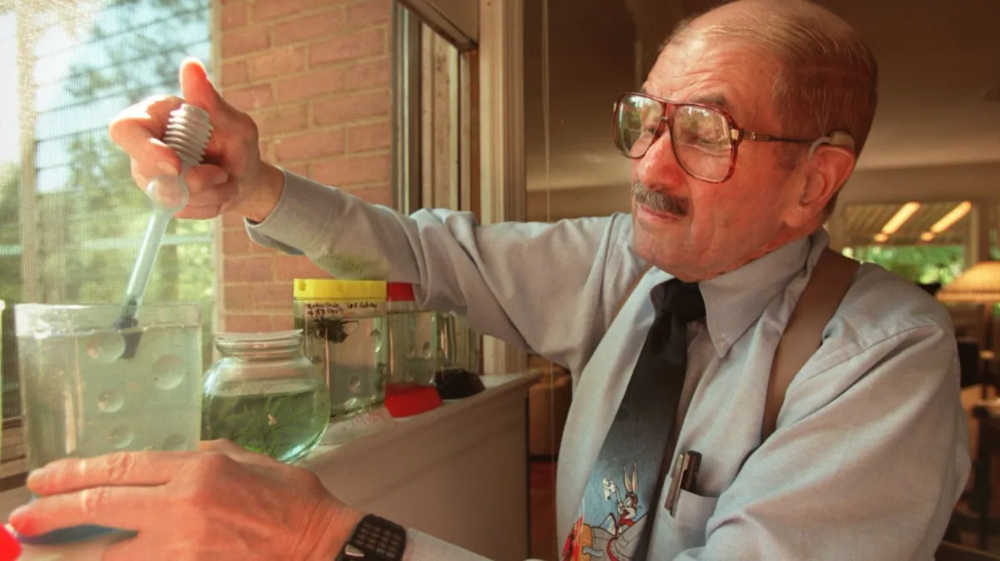

Sea-Monkeys, despite their whimsical name and iconic place in pop culture, are actually a specially bred
variety of brine shrimp (Artemia nyos) developed in the late 1950s and early 1960s. The concept was
created by Harold von Braunhut,

an inventor and marketer who saw potential in selling live animals as a
simple, mail-order novelty for children. He worked with marine biologist Dr. Anthony D’Agostino to
selectively breed a strain of brine shrimp that could enter a state of cryptobiosis—effectively
“pausing” life—allowing the eggs to survive long periods in dry form. This made it possible to package
them as instant pets that would “come to life” once placed in water, a feature that fascinated young
buyers and became a core part of the product’s marketing allure.
Introduced widely in the 1960s, Sea-Monkeys were promoted through colorful comic book ads that promised
smiling, humanoid underwater creatures living in miniature kingdoms. Although the real animals were much
simpler, the imaginative advertising captured the spirit of mid-century novelty culture and turned
Sea-Monkeys into a cultural phenomenon. Over the decades, they evolved from a quirky toy to a
recognizable symbol of nostalgic Americana, appearing in television shows, novelty catalogs, and science
kits. Today, Sea-Monkeys continue to be sold as both a fun introduction to basic biology and a charming
piece of retro pop culture history.